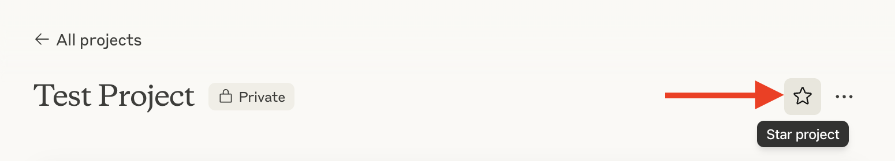

Not expert, but learning
→
8 ani experiență în Marketing
→
Studii economice licență & master, UBB Cluj-Napoca
→
Peste 200 de persoane instruite la cursurile mele de AI & Marketing
→
Peste 5 ani în proiecte de educație
→
Predau la ASEM
Founder · Marketing & AI


Care este cel mai avansat lucru pe care l-ai făcut cu AI?
Ce ai vrea să înveți legat de AI?

💡 Miliarde de oameni au bifat imagini cu mașini, copaci, semafoare → AI-ul a învățat să vadă lumea reală
Cum învață orice AI — 3 etape
1
Antrenarea — exemple masiveI se arată milioane de exemple (imagini, texte, sunete). Fiecare cu răspunsul corect: „asta e semaforul, asta nu e".
2
Corectarea — greșeală și recompensăCând AI-ul greșește, inginerii îl corectează. Ajustează calculele interne → greșește din ce în ce mai puțin.
3
Predicția — testul cu ceva nouVede o imagine pe care nu a mai întâlnit-o niciodată și o recunoaște corect. ChatGPT face același lucru — cu text.
Conectezi (gemini.google.com → Connected Apps)
Gmail
Calendar
Docs
Drive
Keep
Tasks
Exemple de comenzi„Rezumă-mi emailurile de azi" · „Ce am în calendar săptămâna asta?" · „Adaugă un event mâine la 9:00"
De ce contează: lucrezi direct în ecosistemul Google, fără copy-paste. Gemini vede contextul tău real și execută sarcini.

1
Gemini → Canvas
2
Scrie promptul: subiect + audiență + nr. slide-uri + ton
3
Gemini generează structura + conținutul
4
Editezi/rafinezi live în Canvas
Exemplu prompt"Creează o prezentare de 6 slide-uri pentru o ofertă către un client nou, despre serviciile firmei mele de consultanță contabilă. Ton profesional, un slide cu prețuri."
Business: oferte, pitch-uri, prezentări interne — în minute.


3 panouri: Sources (sursele tale) · Chat (întrebări cu citate) · Studio (rezumate, Audio Overview)
Diferența cheie: răspunde doar din sursele tale, cu citate verificabile care trimit la pasajul exact.
📋 Bază de cunoștințe
"Care e procedura de concediu?" → răspuns instant, citat din politici
📊 Analiză documente
Rapoarte financiare → trenduri fără să sapi în spreadsheet-uri
🎙️ Audio Overview
Documentele devin un podcast de 2 voci · 80+ limbi, inclusiv română
🤝 Onboarding
Încarci datele unei companii → înțelegi rapid structura ei
1
notebooklm.google.com → New Notebook
2
Adaugă o sursă (PDF: ofertă, raport, procedură, contract)
3
Pune 2-3 întrebări → observă citatele care trimit la pasajul exact
4
Generează un Audio Overview în română → ascultă rezumatul
5
(Opțional) Generează un Briefing Doc sau Study Guide
Business: sintetizezi rapid contracte, rapoarte, documente lungi — cu acuratețe verificabilă.
1
În Claude → Projects → Create Project
2
Dă-i un nume (ex: "Asistent comercial")
3
Adaugă instrucțiuni (cine ești, ton, reguli)
4
Încarcă 1-2 fișiere de context (ofertă, profil companie)
5
Pune o întrebare — observă că deja știe contextul
Exemplu: Project "Aplicare Grant ODA" → încarci o dată cerința + profilul companiei → Claude redactează și verifică eligibilitatea cu context complet.

